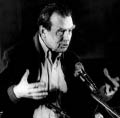

CZESLAW MILOSZ
Jochen Winter'in uyarladığı versiyondan tercüme edilmiştir.
1980 yılında Nobel edebiyat ödülünü almadan önce, şair, romancı ve deneme yazarı Czeslaw Milosz, anavatanı Polonya'da bile ancak edebiyat çevrelerinde tanınıyordu. 1911 yılında Litvanya'daki Szetejnie'de doğdu, üniversite dahil bütün öğrenimini Vilnius'ta tamamladı. İlk şiir derlemesini yirmi iki yaşında yayımladı. Paris'te öğrenim görmek için burs aldıktan sonra Milosz, Vilnius ve Varşova'da Polonya radyosu için çalıştı ve savaş sırasında Nazi işgalcilerine karşı yasadışı operasyonlara aktif olarak katıldı. 1945-1951 arasında New York, Washington ve Paris'te kültür ateşeliği yaptı. Sürgündeyken belli başlı eserlerinden birkaçını kaleme aldı. La pensée captive (Gallimard, 1953) adlı deneme derlemesinde Polonya'daki Stalinci rejimden kopuşunu açıklıyordu. Daha sonra Amerika Birleşik Devletleri'ne yerleşen Milosz burada Berkeley Üniversitesi'nde Slav edebiyatı dersleri verdi. Politik açıdan, Polonya'daki durumu eleştirmekle yetinmedi; Batı'yı ve uygarlık krizini de eleştirdi.
Milosz 14 Ağustos 2004'te Krakov'da öldü.
Fransızcaya tercüme edilen eserleri arasında şunları sayabiliriz: Poèmes 1934-1982 (Fayard, 1986), De la Baltique au Pacifique (Fayard, 1990), Traité de théologie (Cheyne, 2003), Le chien mandarin (Mille et Une Nuits, 2004), L'abécédaire (Fayard, 2004).

MILOSZ
Czeslaw Milosz, siz Litvanya'da doğdunuz, gençliğinizi Vilnius'ta geçirdiniz. Burası, sizin de belirttiğiniz gibi, "on üç kez el değiştirmiş" ve Doğu Avrupa tarihinin ürkütücü rastlantılarının sanki bir büyüteç altındaymış gibi odaklandığı bir şehirdi. Bu askeri çatışmaların hedefi özellikle kültürel ve dilsel kimlikti. Çocukluğunuzda Vinius bir Polonya ve Yahudi şehriydi, hatta Museviliğin merkeziydi. Bu koşullarda, Polonya dilinde yazan ama kökleri Litvanya diline derinden kök salmış bir şair olmanıza nasıl bir önem atfediyorsunuz?
Bir yandan paradoksal bir durum, ama diğer yandan Litvanya'da iki dil vardı. Örneğin Galcenin İngilizceyle birlikte varolduğu İrlanda gibi. Ama Galce yavaş yavaş unutulurken, Litvanya dili on dokuzuncu yüzyıl sonunda ve yirminci yüzyıl başında bir Rönesans yaşadı, sonra da bağımsız Litvanya'nın resmi dili oldu. Anne babam ve atalarım Litvanya'dan geliyorlar. Bu, atalarımın on altıncı yüzyıl başından beri Polca konuşmasını engellemedi.
Sizin gençliğinizin Litvanya'sı tıpkı çocukluğunuzun Çarlık Rusyası gibi yok oldu. Bu size nasıl bir duygu veriyor?
Bu bir mesafe sorunu sanıyorum. Her edebiyat eserinde mesafe büyük bir rol oynar. Mesafe farklı biçimlerde elde edilebilir. Örneğin zamanın geçmesine izin vererek –Marcel Proust'ta olduğu gibi. Ya da ülkeler yeni hudutlar tarafından bölündüklerinde veyahut tarih içerisinde yok olduklarında; ama aynı zamanda kişinin kendi sürgünüyle de. Bana göre Litvanya tam da bu işleve sahiptir: Yalnızca benim anılarımda mevcut, kısmen mitsel bir ülkeymiş gibi onun hakkında düşünebilir, yazabilirim.
O halde, tarih sizin için yalnızca Vilnius'un mimarisi aracılığıyla değil, aynı zamanda pagan atalarınızın güneş, şafak ve ay mitlerini yarattıkları Litvanya meşe ormanlarının altında ırmakların kat ettiği son derece verimli bir manzara biçiminde de var olmuştu.
Ben, Batı'dan etkilenmiş bir kültürel ortama mensubum ve bu özellikle mimariye yansıdı. Gotik sanat bütün Baltık bölgesine uzandı ve özellikle Riga'da izler bıraktı. Buna karşılık Vilnius daha ziyade İtalya'dan gelen baroğun izini taşıdı. Piyer ve Paul kilisesi bunun örneğidir. Kubbenin altında görülen büstler, gençliğimde koleksiyonunu yaptığım güzel pulları süslüyordu. Bunlar beni Vilnius'un üzerindeki bulutlara dek varan barok biçimler aramaya kışkırtan derin izlenimlerdir. Manzara konusunda şunu söyleyebilirim: Litvanya'nın merkezindeki küçük bir ahşap kilisede vaftiz edildim, meşelerle çevrili bir kilise. Belki de pagan ruhu hâlâ koruyorlardı, çünkü Litvanya Avrupa'nın Hristiyanlaşmış son ülkesidir. Ağaçların mitolojisiyle bugün de çok derin bir bağım var.
O dönemde, yani on dördüncü yüzyıl sonunda, Hristiyan geleneği büyülü temsiller üzerinde temellenen bir doğa dininin yerini aldı; bununla birlikte, bu dinin rahiplerinin ezeli ateşi söndüğünde ve kutsal ağaçlar kesildiğinde bile bu ruh asla ortadan kaldırılamadı.
Kuşkusuz, pagan düşünce orada burada varlığını sürdürdü; aynı zamanda, Roma Katolikliğinin kuralları arasına girdi. Bu arkaik ve litürjik öğeler karışımının çocukluğumda duygusal yaşamım üzerinde güçlü bir etkide bulunduğunu sanıyorum.
Kilisenin dilinin ve edebiyatın dili Latinceydi. Litvanya ve Polonya Latinceyle bir dizi analoji sunar ve böylece Hint-Avrupa dilleri arasındaki derin bağı kanıtlar. Artık Roma da belli ölçüler içerisinde sizin yazınızın dış hududunu ve iç merkezini oluşturmakta.
Evet, benim şiirimin, kökeninde çiftdilli olan geleneksel Polonya şiirinden kaynaklandığının gayet farkındayım. Şairler Polca ve Latince yazıyorlardı –Polcanın ölçü sistemi Ortaçağ Latin dini ezgilerine dayanır. İtalya'yla etkileşim sonuç olarak dilsel düzlemde tartışmasızdır. Yüzyıllar boyunca Latince özellikle Avrupa'nın dili olarak kabul edildi, bilginler on sekizinci yüzyıl sonuna dek bu dili kullandılar. Bilimsel nomenklatura üzerinde etkisini derinden taşımış olan Limné'nin, tıpkı Swedenborg gibi Latinceyi kullandığını unutmayalım.
Swedenborg, mistik doğa felsefesi ve kâhince deneyimleriyle sizi belirgin bir şekilde cezbetti.
Beni büyüledi. Şu ana dek Swedenborg fenomenini henüz kimse açıklayamadı. Elbette bazıları onu bir şizofren olarak kabul ettiler, ama bu hiçbir şey demek değil. Bugün bizim kavradığımız anlamda şizofreni semptomlarından hiçbiri yoktu. Onun öte dünya bakışı bir sır olarak kalır.
O dönemin bir başka yazarı da sizi kendine bağladı. İngiliz şair William Blake'ten söz etmek istiyorum. Sanırım sizin hissettiğiniz entelektüel
akrabalık, mutlaklık düzeyine çıkartılan bir rasyonalizmi ve her türden doktriner ideolojiyi red üzerinde temelleniyor.
Blake benim için uzun süredir çok kışkırtıcı entelektüel deneyim değerinde. Biliyorsunuz, İngiltere'de ve Amerika'da bile çok geç keşfedildi. Ben Berkeley'de ders verirken, 68 kuşağından birçok öğrenci Blake'in şiirlerini coşkuyla okuyordu. Birçok başka yazarı olduğu gibi beni de mistik yönelimiyle ilgilendiriyordu. Ama yalnızca bir mistik değildi, çünkü sonuçta, döneminin olayları üzerine yoğun bir çalışma sürdürdü –Fransız Devrimi onun incelemelerinde önemli bir yer tutuyordu. Bunun ötesinde, on sekizinci yüzyılın özelliği olmuş, bilimdeki indirgemeci ve rasyonalist entrikaları eleştiriyordu.
Sizin temel metafizik sorulara ilişkin duyunuzdan yola çıkarsak, Mozart'ın Sihirli Flüt'ünde sezgi ile aklın, kutsalla kutsal olmayanın uyumlu etkileşimini ortaya çıkarmanız ve bunu global bir hakikat arayışının zorunlu koşulu olarak kabul etmeniz mantıklı gelmektedir.
Gerçekten de, tinin tarihinde olduğu gibi müzik tarihinde de bu birliğin kopuşunu görebileceğimiz belirli bir nokta vardır. Ben Sihirli Flüt üzerine düşüncelerimde Polonyalı yazar Adam Mickiewicz'den esinlendim. Gençken operayı izlemişti ve Mozart'ın eserindeki masonların yaptığı gibi dünyayı kurtarmak isteyen bir locaya mensuptu. Onların mistisizmi tamamen rasyonalist yönteme paraleldi ve sonradan romantizmde doruğa çıktı. İki akımın birbirlerini ille de dışlamadıkları, tersine bir üst evrede bir araya getirilebilecekleri fikriyle doluydular.
Aydınlanmacılardan bu yana sekülerleşme süreci ilerleme göstermiyor mu? O zamandan beri, kutsalın ihlalinden söz etmemiz gerekmez mi?
Bana göre, çok daha ciddi bir şey olup bitmektedir: Kutsal, bir yanılsama olarak gösterilmiştir, reddedilmiştir, sağa sola saçılmıştır. Olayların gücü sayesinde yavaş yavaş yok olup gidiyor.
Sizin eserinizde, Hristiyan geleneğin yitiminin yirminci yüzyılın merkezi sorununu oluşturduğu fikrine az çok açık imalara sürekli rastlanıyor.
Bu tema beni sürekli meşgul etmekte. Ama Hristiyanların ve Hristiyan teologların çoğunun tersine, hepimizin, müminlerin de mümin olmayanların da aynı gemide olduğumuzu, karşımızdaki güçlüklerin nesnel nitelikte olduğunu, yani bazı dinsel inançları savunup savunmamızdan bağımsız olduğunu düşünüyorum.
Madem ki bilim ve teknoloji bizim yaşamımızı giderek daha fazla tektipleştiriyor, her yerdeki varlıklarıyla dinin en özgül hedeflerini bastırdıklarını söyleyebilir miyiz?
Bir anlamda evet. Bilimsel ve dinsel teorilerin karşıtlığı her koşulda fazlasıyla öğreticidir. Darwin'in evrim teorisinin din için büyük bir risk olarak kabul edildiğine ve dinin de onunla mücadele ettiğine hiç kuşku yok. Bir süre önce, Papa'nın bu teoriyi onaylar gibi gözüken kimi sözlerine bu nedenle şaşırdım. Beni ilgilendiren şey, doğru olup olmadığı değil, on dokuzuncu ya da yirminci yüzyıl insanlarının düşüncesini ne ölçüde etkilediği de değil. Kesin olan şey, bunun sonucu olan entelektüel dönüşümün dinsel hayalgücünü sabote etmiş olması. Ayrıca, bilimsel teorilerin vülgerleştirildiklerinde ve küçük militan denemeler içine sıkıştırıldıklarında ciddi bir tehdit oluşturduklarını da unutmamalıyız. İzin verirseniz şunu da ekleyeyim ki, çok sayıda Marksist gizli Darwinciydi, en güçlü sınıfın hayatta kalacağına inanıyorlardı. Ve proletarya hayatta kalmaya daha elverişli olduğundan burjuvazi baskın çıkamazdı.
Kutsallığa saygı, metafizik düşünce, yaratıcılık: Bütün bunlar insanın evrimi çerçevesinde insan varlığının özgüllüğünün, kendini tanımlamasının ve biyolojinin saf nedenselliğinden kurtulma özgüllüğünün kanıtı değil mi? Tarihöncesi dinleri üzerine André Leroi-Gourhan'ın yazıları ya da Ernst Cassirer'in sembolik hayvan olarak insan üzerine yazıları aklıma geliyor.
İnsanın bir bilince sahip olması benim üzerimde daima önemli bir çekim oluşturdu. Doğanın kendisiyle ve doğa süreçlerine dair bazı determinist anlayışlarla tezat halinde olan bilinç bir tür kılıf doğurur ve bu kılıfın içinde tarihsel gelişmeleri ve bunlar karşısında benimsediğimiz konumu görselleştiririz. Bunu din, sanat ve edebiyat aracılığıyla yaparız. Bu alanın çerçevesi içinde düşünür, eyler ve hissederiz. Bu durum, Fransız filozof Teilhard de Chardin'in kimi kavramlarıyla karşılaştırılabilir. Teilhard'a hayran değilim çünkü onun yanılsamalar içinde olduğunu düşünüyorum. Yine de insan varlığını tanımlayan bilincin alanını o çizdi.
Teilhard de Chardin'de rahatsız edenin ne olduğunu açıklayabilir misiniz?
İyimserliği, insanlığın içsel gelişmeleri sayesinde İsa'yla buluşmaya, omega noktasına doğru yürümekte olduğu fikrine inancı. Ama bu durumda insanların sayısız ıstırabı hakkında ne denebilir? Teilhard de Chardin'in sisteminde buna yer yok. Eyüp'ün Kitabı birçok nedenle zaten bizim öfkemize yol açıyor, Eyüp başlangıçta sahip olduğunun iki misli deve, koyun ve öküz alıyor ve yeni çocuklarla ödüllendiriliyor –ama daha önce ölmüş çocukların durumu nedir? Burada hayata ödenmesi gereken bir bedel söz konusudur ve biz de buna karşı isyan ediyoruz. Bu nedenle Teilhard de Chardin'in naif güveninde insanlıkdışı bir şey var.
Biyoloji üzerine çalışmanızın sizin dünya görüşünüzü ve yazarlık işinizi belirlediğini söyleyebilir misiniz?
Evet. Örneğin on dört yaşımdayken lisede Darwin ve evrim teorisi üzerine tartışmalar düzenledim. Ardından biyoloji benim karşı-argümanlarımın yöneldiği bir yansıma yüzeyi olduğu ölçüde benim için bir rol oynadı. Sanatçılara esin kaynağı olurken filozoflar tarafından reddedilen Schopenhauer'i ifrata varana dek okudum. Onun fikirleri biyolojinin keşiflerine sıkı sıkıya bağlı. İstisnai bir hayalgücüyle donanmış sanatsal dehayı doğanın nedensel güçlerinin çok üstüne yerleştirdiğinden ve Yaratılış'ın bütününde duygudaşlığa yüksek bir değer atfettiğinden, tamamen biyolojik yasaları inkâr etmenin ideal koşullarını yarattı. Bu nedenle onu tüm diğer düşünürlere tercih ederim. Arzuların, ıstırabın ve dünyanın kımıltısız düzeninin kısır döngüsünden kurtuluş filozofuydu o. Sanatın ve yücenin izin verdiği kurtuluş. Ayrıca kendini Budist olarak niteleyen ilk Batılı düşünür. Onun ortaya koyduğu sorunlar güncelliğini koruyor.
Dünya teknokrasisi kutsallık dışı olanı yaymasına rağmen, bilim insanlarının günün birinde gerçekliği –simyacıların, Michelangelo'dan William Blake'e dek eski zamanların sanatçı ve şairlerinin yaptığı gibi– büyülü bir şey olarak kabul etme fikrine döndüklerini görme umudu var mı?
Gerçekten de önemli bir soru. Modern fiziği ele aldığımızda ve dünyayı kuantum mekaniği perspektifi içinde gördüğümüzde, evrenin bizim güncel genel anlayışlarımıza sığmayacağını saptarız. Gerçekten de temel nokta bu: Güncel bilimin temsil ettiği teoriler ile kültürün ve sanatın ifade biçimleri arasında bir köprü kurmanın mümkün olup olamayacağını belirlemek. Hâlâ büyük ölçüde on dokuzuncu yüzyıldan kaynaklı imgelerle yaşıyoruz. Bu imgeler devrim teorisinden ve ilerlemeye inançtan besleniyor, oysa ki fizik yirmi birinci yüzyıla gireli uzun süre oldu.
Albert Einstein son yıllarında din sosyolojisi üzerinde çok çalıştı. Yeni fiziğin paradigmalarını bizim kavrayışımıza dahil etme olasılığı bir yana, bu paradigmalar düşüncemizi nasıl dönüştürdüler ve gelecekte hangi düzeye yükseltebilirler?
Yirminci yüzyıl başına kadar Newton'un mutlak uzam ve mutlak zaman hipotezi kısmen dokunulmaz kabul edilmişti. Einstein'ın görelilik teorisi, uzamın ve zamanın bir başlangıcı olduğu fikrine vardığı ölçüde bunu yalanladı. Big-bang üzerine incelemeler Einstein'ı doğruladı. Paradoksal biçimde –çünkü Newton özünde dindar bir adamdı–, Newton'un dünyası, burada egemen olan mekanist bakış açısı sonuçta imanı, imgelemi ve sanatı reddettiği ölçüde bir hapishaneye benzer. William Blake'i Newton hakkında, Locke ve Francis Bacon hakkında "şeytan üçlüsü" deyimini kullanması bir tesadüf değildir. Einstein bizi bütün bunlardan kurtardı. Mutlak bir köken olsa da, mistikler de haklıdır, çünkü sonsuzluğu uzam-zaman sürekliliğinin ötesine yerleştirirler. Felsefi metinleri bana önemli itkiler getirmiş olan kuzenim Oscar Milosz'la hemfikir olarak şunu demek istiyorum ki, Einstein'ın yaptığı devrimci keşif dinsel düşünceyi temelden dönüştürdü ve gelecek yüzyılda da dönüştürmeye devam edecek.
On dokuzuncu yüzyılın anakronik eğilimlerinin terk edilmesini söylediğinizde, dostunuz Leszek Kolakowski aklıma geliyor, o da sizi onaylardı kuşkusuz.
Leszek Kolakowski'ye olduğu kadar felsefi ve dinsel sorunlar üzerine yazılarına da değer veriyorum. On dokuzuncu yüzyılın pozitivizmiyle arasına büyük mesafe koyarak, bilim ile dinin buluştuğu ve henüz nispi olarak bilinen bir alana nüfuz etmeye çalışıyor –oldukça tuhaf, inanç ile inançsızlık arasında salınan bir durumda bulunsa bile bunu yapıyor. Mistik bir düşünür değil, daha ziyade berrak bilinçli bir düşünürdür. Ve onu kimi zaman biraz umutsuzluğa kaptıran da bu bilinç açıklığıdır.
Komünist ideolojiyi muğlaklığa yer vermeden eleştiriniz 1950'li yılların başında sizi göçe zorladı. Bu eleştiri kuşkusuz ki yalnızca komünist doktrini saf yorumunuza değil, din duygunuza da bağlıdır. Bu iki itki, Berkeley'de üzerinde dersler verdiğiniz Dostoyevski'nin aydınlık simgesinde birleşmiyor mu?
Doğru, benim doktriner komünizmi reddim dinle koşulluydu, özellikle de Katolik-Roma eğitimim nedeniyle. Bir tür Manici bakış açısı benimsememe yol açmış olan heretik eğilimlerim bile bir rol oynamıştır: Kötülük kadar iyiliğin de egemenliğinde olan düalist bir doğaya ve yine düalist bir Tanrı'ya dair derin duyum. Bu tür metafizik düşüncelerle karşılaştırıldığında komünizm, uygulandığı haliyle, bana son derece içi boş gelmektedir. Elbette, Marksizmin –daha doğrusu, Marksist versiyonu içindeki Hegelciliğin– benim gözümde bir çekicilik oluşturmadığını söyleyecek değilim. Tutsak Düşünce adlı kitabım özellikle benim de maruz kaldığım ve sonunda direndiğim bu cazibenin tarihini anlatmaktadır. Burada Marksizme mümkün olduğunca minnet belirttim –belki de Dostoyevski'yi mihenk noktası olarak aldım, o da ateizmi mümkün olduğunca onaylamış, ama sonra reddetmiştir.
Dostoyevski'nin sizin için hem bir referans noktası hem de bir çatışma konusu olmasının nedeni bu: Kutsal şehir Moskova'nın vaktiyle "Üçüncü Roma" diye adlandırıldığı bu Rus Mesihçiliğini temsil ediyordu.
Mesihçilik Slav halkının bir hastalığı gibi görünüyor. Ben hem Polonyalı hem Katolik olarak, Dostoyevski üzerine ders verdiğimde şu paradoksal durumdaydım: Dostoyevski Polonyalılardan ve Katoliklerden nefret ediyordu... Ama onun içinde taşıdığı Rus Mesihçiliğinin Polonya Mesihçiliğinde de karşılığı vardır. Her iki durumda da bu hareket heretik düşüncelerle harekete geçiyordu. Bunlara göre sonsuz kurtuluşu İsa değil, Millet vaat etmektedir. Dostoyevski konusunu ele almamın nedeni Polonya Mesihçiliğine olduğu kadar Rus Mesihçiliğine de karşı olmamdı; değişken bir yazar, cazibeden yoksun biri değil.
Bir yandan komünizmin yenilgisi, diğer yanda dinin düşüşü. Oldukça karanlık bu referans sisteminde şiire hangi değeri atfediyorsunuz?
Yüksek bir değer. Şiirin "son şeyler" denenleri işlediği bir dönemece vardık, yine de güç bir durum. Açık bir şekilde, birçok insan şiiri teolojinin yerini tutacak bir şey olarak görüyor; ve bu nitelikler dikkate alındığında, gelecek yüzyılın teologlarına esin kaynağı olarak hizmet etmesi mümkündür. Ben aynı zamanda şiirin belli bir anlamda kurtuluş getireceğine de inanıyorum, çünkü genellikle tehlikeli soyutlamalarla onun bir alakası yoktur, somut şeylerle ilgilidir. Basit bir imge üzerinde yoğunlaşma –örneğin bir ibrikteki su– bizi dalgınlıktan ve gerçekdışı teoriden korur. Evet, şiir insanı kurtarabilir.
Siz kendi şiirinizi her zaman tutkulu bir gerçek arayışı olarak, İtalyan filozof Norberto Bobbio'da da bulunan bir fikir olarak tarif ettiniz.
Bunu iki anlamda anlayabiliriz. Bir yandan, tek gerçek hakikat Tanrı'dır, çünkü Aquinolu Thomas'a göre Tanrı saf varlıktır ve dolayısıyla gerçek arayışı saf varlık arayışına denktir. Ayrıca, nesnel gerçekliği kavramaya sürekli çabalıyorum. Bunun anlamı, öznelliğin şiire karışmasını reddediyorum, yoksa bu şiiri sözcüklerin tamamen keyfi olarak dizilmesine götürür.
Nesnel olarak verili olana dair bu meditasyon Yunan şair Konstantin Kavafis'i hatırlatıyor. O da dizelerini Helenistik dünyaya bağlamakta. Homeros çağından Selevkos hanedanlığına, oradan Bizans İmparatorluğu'na uzanıyor...
Fransız sembolizminden ve kuşkusuz ki Robert Browning gibi İngiliz yazarlarından etkilenen Kavafis yeni bir boyut açmış modern bir şairdi: sahiplendiği Helenistik dünyanın tarihi. Bu onu bir tür nesnel şiir yazmaya yöneltti; çoğu Avrupalı meslektaşının yaptığı gibi izlenimlerin, ruh hallerinin şiirini yazmadı. Bu tamamen şaşırtıcıydı. Bunun ötesinde, onda kâhince notlar da görüyorum. Barbarları Beklerken başlıklı şiirinde, yirminci yüzyılın korkunç tarihsel olaylarını öngörüyordu.
Söyleşimiz sona eriyor. Günümüzün insan varlığının, kozmik düzenden düşmüş, kendi kendine yabancılaşmış insanın, cennet gibi bir mutluluk güvencesi hissedebilmesi mümkün müdür?
Cennet fikri bana her zaman cazip geldi. Ben bir şiir yazdım, belki de savaş sırasında Varşova'da kaleme aldığım en iyi şiirlerden biri; naif kafiyelerle dünyayı olması gerektiği gibi, mevcut dünyanın karşıtı olarak oluşturmaya çalıştım. Adı Dünya. Nazi işgali altında yeniden keşfedilen cenneti, çocukluğu anlatıyor. Umutsuzluk verici deneyimin yanında, cennetin ışıltılı nostaljisi hep mevcuttur.
Litvanya'ya geri dönmeyi hayal ediyor musunuz?
Bu düşü elli iki yıldan sonra yerine getirdim. Doğduğum şehirdeydim. Bugün burada bir Czeslaw Milosz Vakfı bulunuyor. Çocukluk ve gençlik yerlerine dönmek istemeyen insanlar var, çünkü ilk anılarının yok olmasından çekiniyorlar. Benim durumum böyle değil. Ben Litvanya'ya yolculuk ediyorum ve geçmişin imgeleri, gördüğüm her şeye rağmen, zihnimde yerini koruyor.